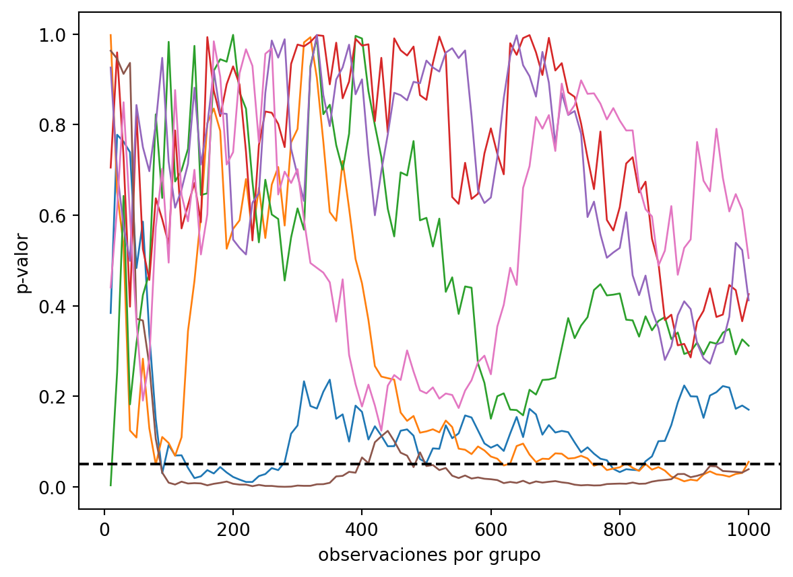

import numpy as np
import matplotlib.pyplot as plt
from math import comb
from statsmodels.stats.weightstats import ttest_indEl mismo dato da dos p-valores según lo que pensabas hacer
bayes
simulación
python
Si miras el test A/B mientras llegan los datos y paras al ver significación, el p-valor deja de valer. La verosimilitud, en cambio, ni se entera. Con simulación.
Tiras una moneda doce veces y salen nueve caras. ¿Está trucada?
Depende de algo que no está en los datos. Depende de si habías decidido tirar doce veces o tirar hasta sacar tres cruces.
Los datos son los mismos en los dos casos: nueve caras, tres cruces, y la última tirada fue cruz. Pero si haces el contraste de toda la vida, en un plan te sale significativo y en el otro no.
Parece un acertijo de examen. Y te pasa cada vez que abres el panel del test A/B para ver cómo va.
Dos planes, dos p-valores
El ejemplo es de Dennis Lindley y Lawrence Phillips, de un artículo de 1976. Lo hago con los dos planes.
Primer plan: tiro doce veces y cuento caras. La hipótesis nula es que la moneda es justa. El p-valor es la probabilidad de sacar nueve caras o más en doce tiradas con una moneda justa.
n, caras = 12, 9
p_binom = sum(comb(n, k) for k in range(caras, n + 1)) / 2**n
print(f"binomial: {p_binom:.4f}")binomial: 0.0730Un 0,073. Por encima de 0,05. La moneda se libra.
Segundo plan: tiro hasta que salga la tercera cruz. Ahora lo que es aleatorio es cuántas tiradas me hacen falta. El resultado extremo es necesitar muchas, y el p-valor es la probabilidad de necesitar doce o más. Eso equivale a sacar como mucho dos cruces en las once primeras.
p_negbin = sum(comb(11, k) for k in range(0, 3)) / 2**11
print(f"binomial negativa: {p_negbin:.4f}")binomial negativa: 0.0327Un 0,033. Por debajo de 0,05. Moneda trucada, publica.
Mismas tiradas. Mismo orden. Lo único que ha cambiado es lo que tenías en la cabeza antes de empezar.
De dónde sale la diferencia
El p-valor suma la probabilidad de lo que pasó. Y también la de todo lo que habría sido más extremo. Nueve caras, diez, once y doce. Es lo mismo que el área a la derecha del histograma en la moneda de las cien tiradas.
Y lo que podría haber pasado depende del plan.
Con doce tiradas fijas, los resultados posibles son de cero a doce caras. Con “hasta tres cruces”, podrías haber tirado cinco veces o cuarenta. Son dos espacios de resultados distintos. Sumas cosas distintas y te sale un número distinto.
El p-valor depende de lo que pensabas hacer, además de lo que pasó.
La verosimilitud mira otra cosa. Para cada valor posible de la probabilidad de cara, \(\theta\), mide cómo de probable era sacar exactamente lo que sacaste. En los dos planes sale lo mismo salvo una constante:
\[ L(\theta) \propto \theta^9 (1 - \theta)^3 \]
Nueve veces \(\theta\) por las caras, tres veces \(1 - \theta\) por las cruces. El plan solo cambia el número combinatorio de delante. Lo compruebo en unos cuantos valores de \(\theta\):
theta = np.linspace(0.05, 0.95, 7)
ver_binom = comb(12, 9) * theta**9 * (1 - theta)**3
ver_negbin = comb(11, 2) * theta**9 * (1 - theta)**3
print(np.round(ver_binom / ver_negbin, 6))[4. 4. 4. 4. 4. 4. 4.]El cociente es 4 en todos. Es una constante: no depende de \(\theta\), así que no te dice nada sobre \(\theta\).
Lo mismo, con un test A/B
Lo de la moneda es un ejemplo de pizarra. Lo que haces en el trabajo es peor.
Lanzas un test A/B. Cada mañana abres el panel y miras el p-valor. El día que baja de 0,05 lo paras, porque para qué seguir gastando tráfico.
Esa costumbre también es un plan de parada. Solo que no lo has escrito en ningún sitio.
Lo simulo. Dos grupos sacados de la misma distribución: el efecto real es cero. Mil observaciones por grupo. Dos mil experimentos. Primero, el caso de manual: miro una vez, al final.
np.random.seed(2026)
n_exp, n_obs = 2000, 1000
a = np.random.normal(0, 1, (n_exp, n_obs))
b = np.random.normal(0, 1, (n_exp, n_obs))
p_final = np.array([ttest_ind(a[i], b[i])[1] for i in range(n_exp)])
print(f"p<0,05 con una mirada: {np.mean(p_final < 0.05):.3f}")p<0,05 con una mirada: 0.046Un 4,6%. El 5% de siempre, más o menos. El test hace lo que promete.
Ahora con los mismos datos, pero mirando cada diez observaciones por grupo. Si en alguna de las cien miradas el p-valor baja de 0,05, ese experimento cuenta como “significativo”.
miradas = np.arange(10, n_obs + 1, 10)
p_tray = np.empty((n_exp, len(miradas)))
for i in range(n_exp):
for j, m in enumerate(miradas):
p_tray[i, j] = ttest_ind(a[i, :m], b[i, :m])[1]
cruza = (p_tray < 0.05).any(axis=1)
print(f"p<0,05 mirando cada 10: {cruza.mean():.3f}")p<0,05 mirando cada 10: 0.370Un 37%.
Ningún experimento tiene efecto. Y más de un tercio te da un ganador.
El p-valor pasea
En el gráfico se ve el mecanismo. Son trayectorias del p-valor según van llegando observaciones. Tres las he elegido a propósito: cruzan 0,05 y luego vuelven a subir. Las otras cuatro son cualesquiera.
cruzan = np.where(cruza & (p_tray[:, -1] > 0.05))[0]
print(cruza.sum(), "dan significativo alguna vez")
print(len(cruzan), "cruzan 0,05 y acaban por encima")740 dan significativo alguna vez
647 cruzan 0,05 y acaban por encimaelegidas = list(cruzan[:3]) + [i for i in range(n_exp) if i not in cruzan[:3]][:4]
fig, ax = plt.subplots()
for i in elegidas:
ax.plot(miradas, p_tray[i], lw=1)
ax.axhline(0.05, color="black", ls="--")
ax.set_xlabel("observaciones por grupo")
ax.set_ylabel("p-valor")
plt.show()
Con efecto nulo, el p-valor no se queda quieto. Pasea entre 0 y 1. Al principio pasea mucho: con pocas observaciones, cualquier racha mueve la media.
Si lo miras una vez, lo pillas en un punto al azar. Si lo miras cien veces y paras en cuanto baja, te basta con que baje una vez. Y si miras lo bastante, acaba bajando.
Los números que imprime el bloque son los que duelen. De los 740 experimentos que alguna vez dieron significativo, 647 acaban por encima de 0,05 con las mil observaciones. Casi todos los “ganadores” eran un mal día del azar que tú elegiste congelar.
Cuantas más veces miras, peor. Pruebo con \(k\) miradas repartidas entre la observación 10 y la 1000:
for k in (1, 2, 5, 10, 20, 100):
idx = np.linspace(len(miradas) - 1, 0, k).round().astype(int)
print(k, np.mean((p_tray[:, idx] < 0.05).any(axis=1)))1 0.0465
2 0.088
5 0.166
10 0.2275
20 0.266
100 0.37Con dos miradas, una a las diez observaciones y otra al final, ya estás en el 8,8%.
Con cinco, en el 16,6%. Con diez, en el 22,8%.
Y los que ganan se paran pronto. Miro en qué observación cruzan 0,05 por primera vez:
primera = (p_tray < 0.05).argmax(axis=1)[cruza]
print("mediana de n al parar:", np.median(miradas[primera]))mediana de n al parar: 90.0Una mediana de 90 observaciones por grupo. Tenías previstas mil.
El 0,05 que imprime el software supone que miraste una vez. Si no fue así, ese número no significa lo que crees.
Donde el bayesiano se pone insoportable
Vuelve a la moneda. La verosimilitud era la misma en los dos planes. Si todo lo que sacas de los datos pasa por la verosimilitud, el plan de parada te da igual.
Eso tiene nombre: el principio de verosimilitud. Y la inferencia bayesiana lo cumple. La posteriori es la priori por la verosimilitud. Una constante delante no cambia nada, así que la posteriori sale igual con un plan que con el otro.
Para un bayesiano, puedes mirar los datos cuando te dé la gana y parar cuando quieras. Lo que crees sobre \(\theta\) después de nueve caras y tres cruces es lo mismo, llegaras como llegaras.
Pero ojo con la regla de decisión. Si tu regla es “paro cuando B gane con un 95%”, cuántas veces te engaña depende de cuántas veces mires. El factor de Bayes mirado cada mañana también se pilla en un mal día.
Y con una priori mala, la posteriori te lleva donde quiera la priori, mires las veces que mires.
Por qué esto te importa
Cuando paras un test porque el p-valor ha bajado, haces otro experimento: recoges datos hasta que te guste el resultado o te canses.
Ese experimento tiene su propia distribución bajo la hipótesis nula. Con efecto cero, te dio un ganador el 37% de las veces.
La regla de parada forma parte del análisis. Puede mover el p-valor tanto como un cambio en los datos.
Y casi nadie la declara. En el informe del test A/B pone el tamaño de muestra final y el p-valor. No pone cuántas veces se miró ni por qué se paró ese día y no otro. Sin eso, el p-valor de ese informe no se puede interpretar. Ni siquiera quien lo firmó sabe lo que vale.
Tienes tres salidas decentes. Escribes antes de empezar cuándo vas a mirar y ajustas los umbrales para que el 5% siga siendo un 5%. Usas un test secuencial, como el de Wald, hecho para mirar cuando quieras. O te vas al lado bayesiano. La posteriori no depende de cuándo pares. La regla con la que decides, sí.
Y hay una cuarta, la que usa casi todo el mundo: mirar cada mañana y fiarte del 0,05. Esa no te la puedes permitir.